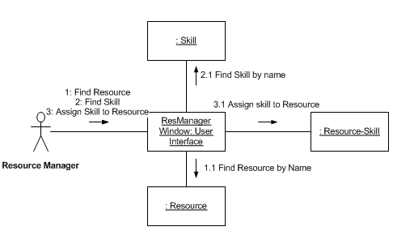

Each interaction diagram should trace the effect of one single message
on the system. Nothing more!
A diagram is complete when it does what that message requires. A contract
can define the requirements for the trigger message.
I don't think you should
trace all the possible interactions from everything that can happen
to the system. The diagram would be incomprehensible. Worse
you would end up imposing a sequence on events that does not exist
in reality.
We gather the information developed in all the interaction diagrams
into a few class diagrams.
For example if we were programming a restaurant ordering system where the
waiters have hand held wi-fi systems that communicate with a workstation
in the kitchen and another at the payment desk/kiosk....
We would trace the necessary consequences of the waiter adding an
item to a customers order -- only. And then the consequences of
the waiter signal ling that order is complete. And then (a third
diagram) trace the effects of a new customer being seated. And
then.... and so on. Meanwhile we gather the messages and classes
into a single class diagram.
It depends on the complexity of the problem and what my requirements are.
Sometimes the code comes first and I risk producing an unmaintainable mess.
But when I can't imagine how to tackle a problem then I reach for
the board or piece of scrap paper first.
Each diagram tells a story about the internal workings of the software
you are developing. It describes a set of internal objects. Objects
send messages to other objects. They do this by calling member functions:
For example an object of class CustomerInRestaurent might
ask for their bill (or check) like this:
A series of these interactions is used to compute solution to the user's
problems...
See the more specific questions below.
No. I like the flexibility to switch to the
most useful for each interaction diagram.
Communication diagrams are good for rough scetches and simple logic.
They leave the loops and alternatives unclear. The numbering is hard
to learn.
Sequence diagrams are good for tidy presentations and complex logic
for they have a clear notation for sequence, selection, and iteration.
You can end up, therefore with both.
Forgive me but it pays to be precise: Class A has a data field
or attribute "myB" which indicates an object of class B.
So figure 15.3 tells us that makePayment() is called in class Register
and this class must know (somehow) which Sale that needs paying.
This may be coded by using an attribute/datafield/ in class Register.
This association may imply the storage of some data in A when coded,
but it does not have to appear as an attribute in A.
Except that bits are data not messages -- yes. However I think you'll
find that hardware engineers use a notation like sequence diagrams
(called timing charts) instead.
An SSD is just a sequence diagram with one primary actor
and an object called ":System". That is the only difference.
If the object is called ":System" and it is the only object.... then the
diagram is a SSD. Else it is not. An SSD shows the system and things that
are not inside the system. If any objects from inside the software appear
then it is not an SSD. It is a mess.
Semantics: SSDs show the sequence of events between an actor and the whole system.
A interation (sequence or communication) diagram should show the objects
inside the system doing something. They should not show things
that are outside the system.
We will have an exercise in class with an SSD and ... you will draw the
Sequence diagram of one of the SSDs messages.
Vital -- if you want to do well in this class, or if you want to
be ready for teams that use communication diagrams rather sequence
diagrams.
As far as I can see, the OO world has three waring camps:
Those who like sequence diagrams, those who want communication diagrams,
and those who have cursed all diagrams and trust only code. And then
there are the newbies who think that it is all class diagrams:-)
UML2.0. Exception -- you are stuck with a UML1.x tool.
I think SSDs are a reduction of the original sequence diagrams
used by engineers, years ago..... going back to Charles Babbage!
In Larman's method, you have one interaction diagram for each message in an SSD.
So you can say that the SSD is refined into a set of interaction diagrams.
They are almost equivalent in power -- sequence diagrams have a less ambiguous notation than comunication diagrams. See example above.
Who is your audience. Most people "get" sequence diagrams without explanation. The numbering of
messages in communication diagrams have to be explained to people who've never seen them.
Both. See next questions.
I agree with Larman. But I find sequence diagrams a lot easier to read
than
communication diagrams. However, communication diagrams are easier to
draw than sequence diagrams.
1+(2*3)
(Disclaimer -- one shows the objects that know how to do addition and
multiplication, the other omits them because I ran out of space....)
Which is the most important strength of Sequence vs. the Communication diagrams?
Communication diagrams use less space and make the network of communications
(dependencies between classes)
clear to the eye.
Sequence diagrams make the sequence clear and look tidier. People "get" sequence diagrams.
I like how sequence diagrams are easier to read but I also like how communication diagrams can be quickly drawn; Does it depend on the situation to make a choice between the two?
Yes. Good question. Well put.
Are interaction overview diagrams useful?
They are useful in large projects and complex interactions - In My Humble
Opinion. For example where the alternative is to draw
a very large and repetitive sequence diagram. An interaction summary could
be used to design top-down the interactions in a piece of software.
When is the execution specification bar necessary in a
System Sequence Diagram?
We started out drawing them, but the latest lecture in SSD's did not feature them.
In a simple
SSD
with just a prime actor and the system
they don't add any value. So I don't worry about them. This is because
the system doesn't call any functions in the simple diagrams.
In a sequence diagram showing many objects interacting you need the
execution bars to figure out where function calls (messages) are coming
from. Does function f(...) in class A call g(...) in B, or is it
h(...) in A that calls B::g(...)?
It seems like you should use Communication first to get your ideas down then switch to Sequence when you feel you're done with the Com diagram(s), this feel true to you also?
I think it is entirely a matter of (1) what kind of space/tool you are
working with + (2) personal taste + (3) Purpose.
I personally find myself preferring sequence diagrams -- so I don't
have to worry about those niggling but essential numbers in communication
diagrams.
Which of the two interaction diagrams(sequence/communication) is more detailed and efficient?
Neither -- in one aspect (only) the communication diagram is ambiguous.
It has no clean way to show the scope of loops and alternatives.
Are the sequence numbers have something to do with the numbers in the scenarios of use case?
No. At least not in Larman's method for designing software. He uses the
SSD to focus each communication diagram on one single step in a scenario
and so the numbers refer to the invisible, internal machinations
that happen as that step is executed inside the system.
If we didn't have an SSD then the leading digit of the sequence numbers
would be the step number in the communication diagram. And they would
all be messages coming in from the primary actor. Here is a translation

of Fig 4-23 of Sinan Si Alhir's "UML in a Nutshell" book that uses
Interaction diagrams with several steps in one diagram. I'll try to bring
the book to class.... old fashioned, sadly.
I don't like this approach because it forces you think about the
user's view of the system at the same time as you try to figure out
what is going on inside the system. There is a tendency to adjust
the scenario to fit the design rather than fit the design to the
user's prefered scenario. The SSD separates the concerns between the user and the designer.
Why can't I just number all the messages 1,2,3,4,... in the order in
which they occur.
Because the numbers also indicate which piece of code generates
the message. So if you have a message numbered "2.3.4" then it
is sent from the method of message "2.3", and "2.3" comes from
message with number "2".
I notice that Sequence diagrams and Communication diagrams seem to specify the same relationships and associations between classes and functions. They vary in their notation. Is it necessary to use both diagrams or can the same goal ultimately be achieved by one or the other?
Any time you need to plan the interaction between objects in a piece of software choose one
or the other. Both are useful. For different purposes.
Both needed in this class.
More below.
It seems like sequence diagrams and communication diagrams serve the same purpose in different ways, so if you use one can you omit the other?
In theory, yes. However, sequence diagrams show complex loops
and selections much better than communication diagrams. As an
exercise demonstrating this try to express the nested loops and
options in
[ 20050502sequence2.gif ]
(a diagram from the unfulfilled orders use case)
using a communication diagram.
What I want is to be able to draw communication
diagrams but read sequence diagrams (with out drawing them)!
Is the only benefit of using a Communication diagram over a Sequence
Diagram to save space?
No. The communication diagram puts all the messages sent to an object
close together and hides the sequence. So they make clear what
responsibilities an object has got.
Another advantage occurs when you discover that you forgot a key message
in the middle of you sequence diagram and there is no space for it.
(will illustrate on board if there is time).
Which of the two Interaction diagram (Sequence diagrams and Communication
diagrams) are more related with the user interface?
Either can be used for any layer. Neither is better.
Indeed in real projects the interaction
diagrams will cross the layers -- starting in the UI and drilling down to
the lowest Technical Services layer.
On page 229, Larman mentions that the choice between either a return or a reply message is optional, yet he prefers the return method. Which method would you prefer us to use?
I tend to show a object being returned. Just a habit.
The
response = target.operation(data)
data form saves space.
Initially I'd like you to always show the return, until you have learned the call-return
pattern and the "execution bars" notation.
The explanations of the diagram frame operators confused me. Can you explain more about them?
One way to look at frames in sequence diagrams, is that, the UML designers wanted to include
all the programming control structures: if, if-else, while, subroutime calls, ... and so on.
They may have gone over the top.
So we have the structured programming of objects!
Are there any other important frame operators besides those in table 15.12?
None that I think are needed in this class, and possibly never.
For your information(YAGNI), I found the following in the standard that are not in
this chapter:
- seq
- break
- neg
- assert
- ignore
- consider
When should frames be used and when should they not be used?
Use "loop" when a pattern of messages is repeated.
Use "opt" when a set of messages may or may not happen.
Use "alt" when there are two or more alternative scenarios.
Use "ref" when you have (or plan to have) a "sd".
I'm confused. Do you have a practical example of a diagram with an opt frame operator?
In an Email system you may need to do something special to message coming
from outside the local network:
14.3 [ message.offcampus() ] spam := spamCheck(message)
Diagram
TBA
yes.
can you explain iteration over a collection in greater detail?
Think for loops!
On page 245 Larman shows the simple kind of iteration
* [ i= 1..n ]
that matches the Java/C++ for loop:
for( i = 1; i <n ; i++) { something(i); }
On page 233 the loop might be coded like this
for( i = 0; i <lineItems.size() ; i++) { st=lineItems[i]->getSubTotal(); }
In code we are talking about a generalization of the classic for loop
for( i = first; i <end ; i++) { something(i); }
which works with numbers. Suppose you have a piece of memory that has
a large number of similar data items in it -- and array then we can write
for( p = array; p<array+size; p++) { something(*p); }
and "iterate over the whole array". In the Standard Template Library there
are a half a dozen more general data structures: vectors, lists, deques, maps, set,
multisets, multimaps, ... which can be "iterated over":
for( i = container.first(); i != container.end(); i++) { something(*i); }
Java 2 provides similar features(Enumerator at
[ http://java.sun.com/javase/6/docs/api/ ]
) here is the example:
for (Enumeration<E> e = v.elements(); e.hasMoreElements();)
System.out.println(e.nextElement());
So do most modern programming languages. The idea dates
back to Barbara Liskov's work.... For an introduction see my
[ ../samples/stl.html#Iterators and Containers ]
in my samples of documentation.
It pays to have a short hand description of this kind of code in our dynamic interaction
diagrams. It also pays not to get two detailed.... but Larman's use of the array notation is
good enough. The UML2 standard explicitly
"does not prescribe its format. An example would be: *[i := 1..n]."
Martin Fowler writes iteration specs like this
[ for each line item ]
When I write an iteration, I tend to be a bit more mathematical
[ for item : collection ]
You could use the OCL which also has the ability to scan across a collection.
You can assume that each <<metaclass>> is a collection of all the objects in that class and
iterate over it:
[ for each object in Class ]
You can assume that each 1-to-many and many-to-many association is associated with a
collection. For example is a Parent is associated with a number of children of class Child:
[ for each child in children ]
will be ok and implies that the role "children" should be written next to the "Child"
class on the association. The name of the association can also be used...
Here are some classic types of collections that appear in OO designs
Table| Name | Property | Operations
|
|---|
| Vector | Numbered sequence | add and delete at one end
|
| Set | Ordered and unique | add and delete in right place
|
| List | Sequence | add and delete at any place
|
| Queue | Sequence | add and delete at opposite ends
|
| Vector | Sequence | add and delete at one end only
|
| ...
|
(Close Table)
Can you explain the nesting of frames show on Figure 15.18? Which frame operator execute first, loop or opt?
Here is some sequences of events and conditions described by this figure
- xx [color !=red ]
- xx [color = red ] calculate calculate calculate ... (n times)
Let me express what :Foo (in figure 15:18) is doing in pseudocode.
(
- bar.xx()
- if color is red then
(
- repeat n times
(
- bar.calculate()
)
- end repeat
)
- end if
)
And also how to express frame operators into communication diagram?
Communication diagrams do not make nesting as clear as sequence diagrams. Perhaps a condition
like this on the message arrow:
- [color=red] *[n times] calculate
Can interactive diagram include structure diagrams? That is to include classes, objects, and package diagrams.
NO!!!! Interaction diagram show objects and interactions between objects.
That means: no packages, no actors, no use cases, are allowed. The only
way a class can appear is as a <<metaclass>> for the occasional
static or classwide operation.
Chapter 15 pages 236 -- csci375 can you go into further detail about metaclasses
Yes... below.
On Pg 236 it says "their instances are themselves classes. However class Calendar is an instance of class Class.
How is it an instance of itself?
Calendar is not an instance of Calendar.... it is the collection of all Calendars, the template
for making calendar instances. The Calendar class defines the data in the instances, it defines
the operations that can be applied to an instance of a Calendar.
Now.... these properties: having instances, being a template, describing instances,.... are all
properties of a Class.
And in some OO prgramming languages classes are instances of a class called "Class"...
More below...
I am having difficulty understanding the concept of metaclass and which type of beer is most useful in trying to understand it, as recommended by Larman?
Suppose you have a class of Beer objects. If you have one you can
send it messages like: sip(), gulp(), quaff(),.. getEmpty(), ... but the beer
of itself doesn't bring another glass of Beer. To do that you need to talk
to an object who "creates" beer. Notice that a Beer object is not a
BarKeep or Server object. SO -- as a more general rule -- the creator of new
objects is hardly ever one of those objects. If nothing else you would have
a problem getting started if you could only get one if you had one.
In most OO languages you get a new object of a class by a special constructor
message that is handled by the class itself. In C++:
Beer * mybeer = new Boddingtons();
Notice syntax difference
drink = mybeer.quaff();
has an object (mybeer), but "new Boddingtons()" doesn't. In fact it can't since there
is no object to send the message to in the Boddington's class yet...
Now..... we can also make the class responsible for other actions than creation
(there is a special notation for creation that omits the metaclass). For example,
I think that a class can easily maintain a list of its instances and their IDs, and
so be useful for finding out who has just logged in. A class can keep a count of
the number of its instances: counting them and assigning a unique number, perhaps to them.
This task shouldn't belong to a particular object. But seems to belong to the class
itself.
The UML gurus decided to use the jargon "metaclass" to describe the object
that makes objects. Thats all. In Smalltalk and CLOS for example these objects
exist and actually belong in a class.... called "Class".
C++ and Java programmers talk about "static" data and functions in this context...
Please drink responsibly.
To understand the diagram 15.2 which shows a class object as an instance of a metaclass the book says, "it may help to drink some beer before trying to understand this." So, I tried that and it seems that I'm still having some trouble. Could you explain this concept?
It must be the wrong kind of beer?
I don't understand polymorphic messages and cases. Can you explain better what it is, what is needed and how to create it ?
In object-oriented software the effect of sending a message to an object
depends on the actual class of the object even if we send it through
an abstract pointer.
My standard example is when you call your pet different things happen
depending on the class of the pet. It is a Dog the pet comes to you
with wagging tail, if it is a Cat it only comes to you if it is
hungry. So
Pet *p;
...
p->call("Come here");
(in C++) or
Pet p;
...
p.call("Come here");
(in Java) gives a different result depending on the content
of the "..." above:
p = & fido; // a Dog
p = & tom; // a Cat
(above in C++), in Java
p = fido; // a Dog
p = tom; // a Cat
Put it another way -- objects know what to do.... just like real live
objects.
Sadly there is no easy way to diagram this behavior in the UML interaction
diagrams -- I guess we need three-dimensional paper.
Could you explain a little bit more about asynchronous and synchronous calls?
A synchronous call send the message and waits for an answer.... the receiver gains control and
the sending one waits, the receiver does things, and still the sender waits. Then, when the target is finished the sender is able to restart. This is the way nearly all OO messages work.
In the asynchronous message the sender sends the message to the target and, even before it arrives,
is continuing. There are now two parallel threads of control running. The sender and the receiver are active at the same time. THe target can not just use the "return" to send control or data back. It
use messages to repond with data. These are harder to manage and tend to be rare in practice. Used typically between independent bits of hardware.
Synchronous messages are the familiar "function calls" of programming:
- The caller stops dead when the message is sent.
- The called object becomes active.
- The called object completes it's work and 'returns'.
- The called object goes to sleep and the caller re-awakens
having finished a single step.
Asynchronous messages are like communications between people, systems,
and threads in a program:
- The receiver may already be doing things.
- The sender continues to be active after sending the message.
- The receiver is active before getting the message.
- Both continue working.
- As a rough rule: there is no return needed or expected.
If time.... in class skit.
I hope this helps -- it is a deep concept and we will return to it
later.
Meanwhile: treat all messages as synchronous!
How do you show looping in communication diagram?
You put an asterisk in describing the message
number * [Condition] message
The semantics is like a while loop.
How are messages numbered in complex numbering? Figure 15.28 shows how it is done but i don't understand how it goes
Good question. The
numbering
is the nastiest and trickiest part of communication diagrams.
The numbering is the main reason sequence diagrams are easier to read!
Studying and drawing lots of examples makes it
clearer.
But here is the fundamental rule:
When a message numbered n arrives at an object it triggers
a sequence of other messages that the object sends out. These
are numbered:
- n.1, n.2, n.3, ...
If there are alternative messages in the 2nd step
- n.2a, n.2b, ...
The numbers concatenate the calling sequence plus the next calls.
The following set of numbers is in the correct order:
1, 2, 3, 3.1, 3.2
So is
1, 2, 2.1,2.2, 3
Exercise: here are some randomized lists of steps, what is the actual
call sequence -- draw a tree of these events:
1, 1.1, 1.3, 1.2.1, 1.2, 2
2, 1, 1.1.1, 1.1, 1.2.1, 2.1
3,2,1, 2.3,2.2,2.1, 2.2.1,2.2.2
In the complex sequence numbering diagrams, it seems that both, sequential diagrams and communication diagrams are mixed. Can both type of diagrams be used in a hybrid form?
No. Do one or the other. When you have space and the sequence of events is critical, or you
are working with non-UML experts then sequence diagrams are (IMHO) best. When you are short of space,
working with experts, and in a hurry -- communication diagrams on a board work well.
By the way complex numbering of messages in a communication is vital for figuring out what is going on.
See Numbering above.
Is there a snippit of code that you might be able to show that might illustrate a singleton pattern? Any visualization of what it looks like in code would be greatly appreciated.
I'm sure I've written a demo.... but I can not recall where.....
(global search, and muttering...)
I'll have to write one:-(
[ singleton.cpp ]
(a Singleton counter)
[ test.singleton.cpp ]
(tries to get two of them and... gets the same one twice...)
(20 minutes later).
I found code in C# and .Not under links on
[ PatternSingleton.aspx ]
(and the best of luck). THe WikiWikiWeb
[ wiki?SingletonPattern ]
has the following piece
Here's a very simple implementation of a singleton FooBar object:
FooBar globalFooBar; // Don't create any other instances!!!
(The "singletonness" of this object is enforced by humans: If you create your own instances, the system won't work right, and your project's technical lead will slap you upside the head. ;-)
But
Singletons have one main advantage over this approach. You only create a singleton object if your program execution uses it. Besides, singletons are the logical way to simulate global variables in Java.
(Close But )
Amazingly I found a singleton being used in my old CS201/CS202 book
[ ../cs201/Deitel/CppHTP6e_examples/ch23/Pong/Pong/Pong.cpp ]
(but I think they are using an existing Singleton in a GUI framework).